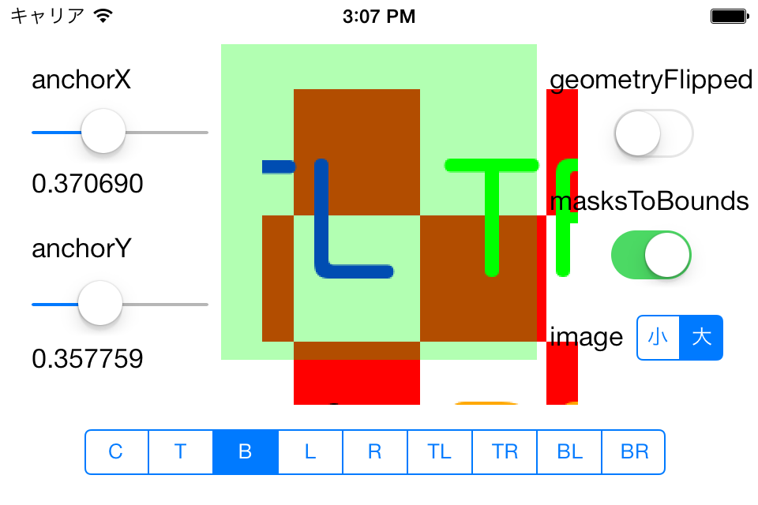
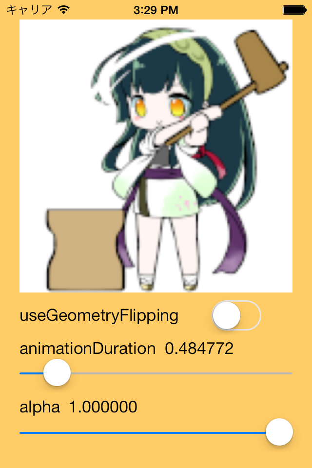
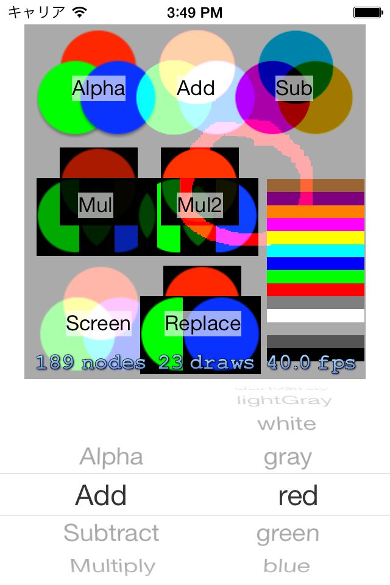
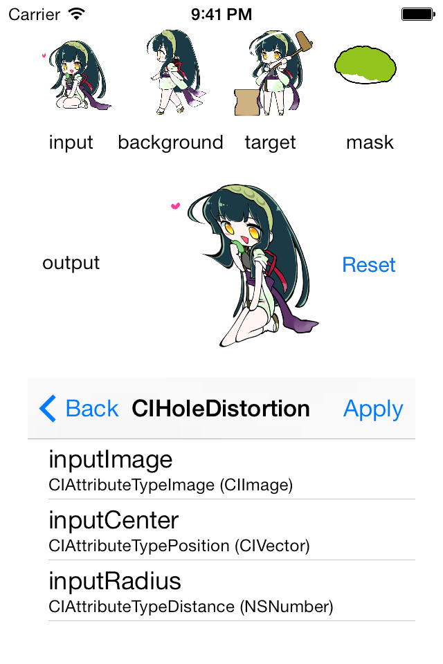

Welcome to my GitHub Pages
iOS samples
CALayer
CALayer の振る舞いがなかなか理解できなかったので、学習用に作りました。

Foldable
画像を折り畳んでみたくて作りました。UIImageView の拡張で、設定された画像を上下左右に４分割する QuadImageView、それを折り畳めるようにする FoldableQuadImageView が含まれています。 (画像データは「東北ずん子」サイト様 (http://zunko.jp/) のものを利用させて頂いています。この場を借りて御礼申し上げます)

SKSpriteBlendMode
iOS 7 よりサポートされている Sprite Kit における SKSpriteNode ではブレンドモードが設定できます。これの動作を理解するために作りました。

CIFilter
Core Image Filter の学習用サンプルです。 とりあえず inputImage, backgroudImage, targetImage, maskImage を取り扱うようにしました。 他の入力値は追って作ります。 (画像データは「東北ずん子」サイト様 (http://zunko.jp/) のものを利用させて頂いています。この場を借りて御礼申し上げます)

Public
Privacy Policy
Support or Contact
Naoto Yoshioka yos@pb3.so-net.ne.jp